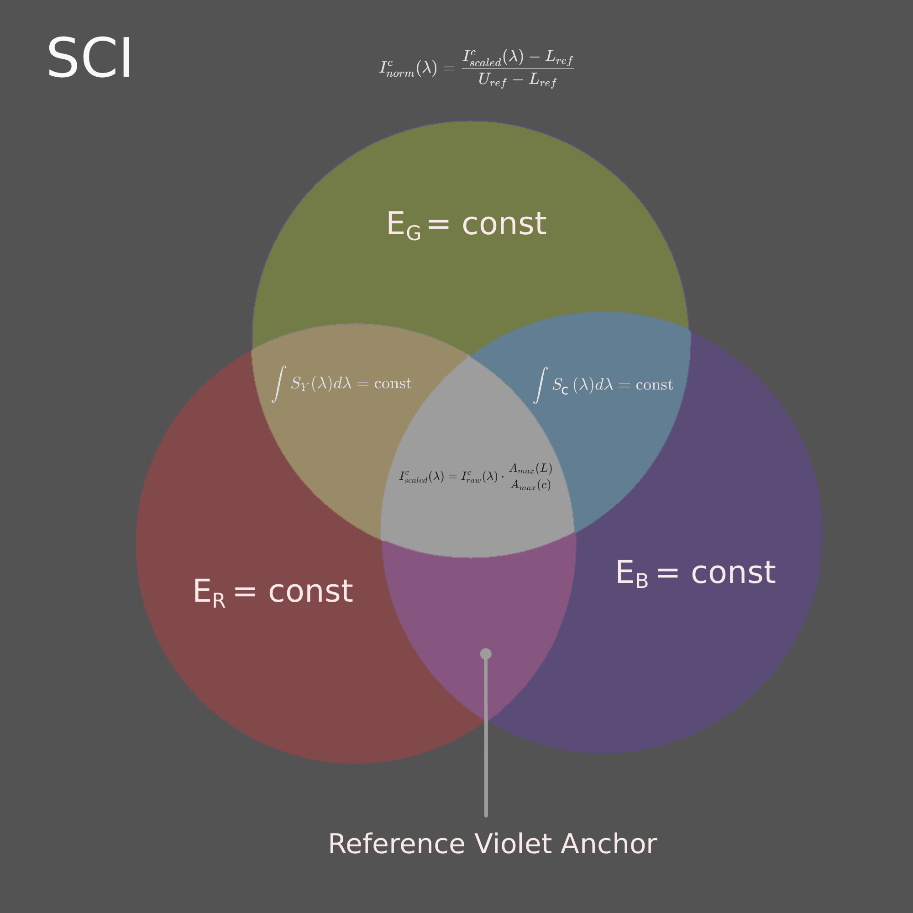
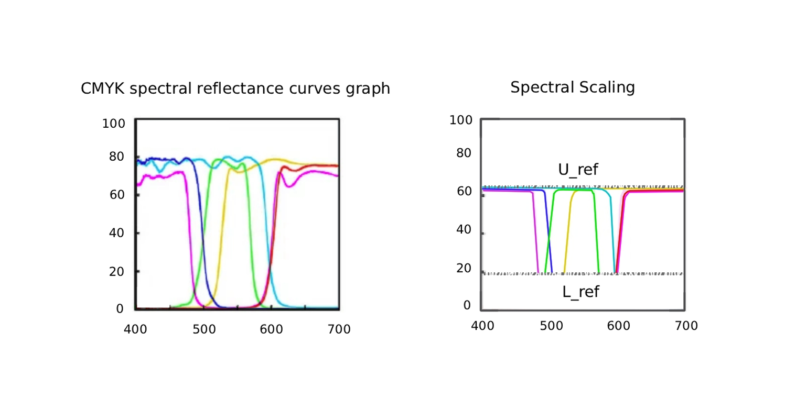
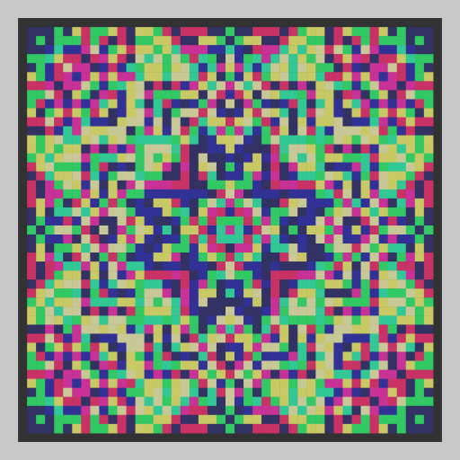
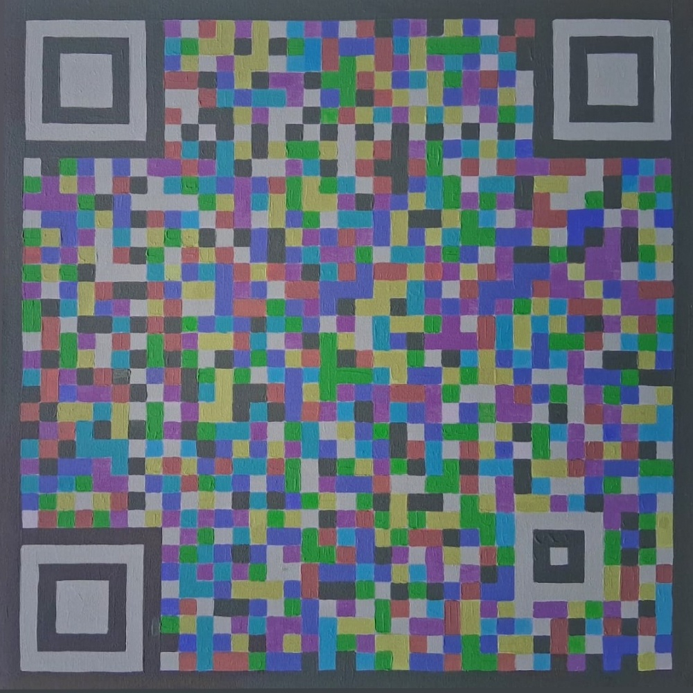

ВОСПРОИЗВОДИМОСТЬ СТРУКТУРЫ ЦВЕТОВОГО СИГНАЛА В СУБТРАКТИВНОЙ СРЕДЕ
Как сохранить структуру цветового сигнала при переходе между различными физическими средами?

Ресурс посвящён синхронизации цвета между излучающими (экраны), отражающими (краски) и регистрирующими (датчики) системами.
1. Концептуальное введение
Проблема межканальной интерференции (Crosstalk)
В реальном физическом мире субтрактивные красители обладают широкими спектрами поглощения. Когда мы кодируем независимые потоки данных в каналы \(R, G, B\), на физическом отпечатке происходит наложение спектров. Это явление порождает межканальный шум (Crosstalk), уничтожающий машиночитаемую структуру сигнала.
Для решения этой проблемы разработана модель SCI (Spectral Channel Integrity). Она устраняет взаимное влияние каналов путём детерминированной нормализации параметров пигментной среды, возвращая им операционную независимость.

ПОДРОБНО: Ограничения перцепционного подхода и цели SCI
Классический подход Международного консорциума по цвету (ICC) опирается на колориметрию — подгонку координат под человеческое восприятие. Для автоматизированных систем компьютерного зрения такой подход неприемлем по следующим причинам:
- Потеря математической строгости: Перцепционные профили используют интерполяционные таблицы, что делает тракт кодирования-декодирования сигналов необратимым.
- Эффекты метамеризма: При изменении спектрального состава внешнего освещения визуально «одинаковые» цвета кардинально меняют физический профиль отражения.
- Разрушение многослойных данных: Любая попытка упаковать в один элемент несколько информационных слоев разбивается о нелинейное смешение пигментов.
Решение SCI: Модель осуществляет жесткое приведение спектрального отклика пигментов к общим физическим границам, превращая субтрактивную среду в стабильный аналог аддитивной матрицы.
2. Математическая модель
Механизм спектрального лимитирования
Якорь системы — спектральный ограничитель. В качестве опорного компонента выбирается пигмент, обладающий наименьшим физическим динамическим диапазоном в наборе (в CMY-системах это обычно Magenta). Спектральные характеристики остальных пигментов принудительно масштабируются относительно физических границ этого ограничителя, формируя единые верхний \(U_{ref}\) и нижний \(L_{ref}\) опорные уровни.

ПОДРОБНО: Математический аппарат масштабирования
Амплитудное масштабирование
\(I_{raw}^{c}(\lambda)\) — исходная интенсивность отражения рассматриваемого пигмента на длине волны \(\lambda\);
\(A_{max}(L)\) — максимальная физическая амплитуда выбранного спектрального ограничителя;
\(A_{max}(c)\) — максимальная амплитуда рассматриваемого пигмента.
Формирование общих опорных уровней
\(S_{in}\) — значение входного сигнала после амплитудного выравнивания;
\(U_{ref}\) — общий верхний референсный уровень системы;
\(L_{ref}\) — общий нижний референсный уровень системы.
Границы применимости модели
Модель не заменяет традиционные методы цветопередачи и не ограничивает использование насыщенных цветов в художественной и дизайнерской практике. Её задача — формирование воспроизводимой спектральной среды для приложений, в которых критически важно сохранение структуры и операциональной независимости RGB-каналов.
Области применения:
- компьютерное зрение и системы искусственного интеллекта;
- прецизионная калибровка оптических систем;
- многоканальное спектральное кодирование данных.
Подобно тому как камертон не заменяет музыку, а служит эталоном настройки, SCI не подменяет существующие цветовые пространства, а предоставляет инструмент для задач, требующих детерминированного разделения информационных каналов.
3. Практическое применение в компьютерном зрении
Идея увеличить емкость QR-кодов за счет использования цветовых каналов (RGB) не нова. Но при обычной печати в формате CMYK информация в каналах теряется из-за перекрестных искажений (Crosstalk), и решить эту проблему алгоритмами декодирования практически невозможно. Модель SCI формирует физически устойчивую структуру цветовых каналов, адаптированную под особенности печати, что исключает потерю данных. SCI позволяет системе компьютерного зрения четко видеть и дифференцировать каждый цветовой канал в отдельности. Такой подход кратно повышает точность распознавания кодов в реальных условиях.

Spectrum QR Generator (3-в-1)
Параллельная упаковка трех независимых массивов данных в один физический QR-код с разделением по RGB-каналам.

QRnament Creator
Алгоритм бесшовного внедрения матричных structures данных в орнаментальные композиции и паттерны.
Обратите внимание: представленные веб-генераторы формируют изображения в цифровом виде, без адаптации к печати. В исходном цифровом виде эти структуры гарантированно декодируются программным обеспечением только при считывании непосредственно с экрана вашего монитора.
Для корректного переноса на физический носитель (бумагу, plastic или холст) параметры генерируемого файла должны пройти предварительную подготовку к печати согласно алгоритмам SCI.
Подраздел: Практическое испытание
Эксперимент с нанесением многослойного цветового кода и орнаментального акриловыми пигментами на полотно по принципам модели SCI. Полученные результаты демонстрируют принципиальную возможность декодирования многослойных структур, сформированных на физическом носителе. Эксперимент носит предварительный характер и требует дальнейшей оптимизации алгоритмов кодирования и считывания


Аппаратная калибровка
Аппаратная калибровка SCI основана на использовании эталонной тестовой матрицы и набора узкополосных RGB-фильтров (R ≈ 615 нм, G ≈ 535 нм, B ≈ 450 нм). Исходный цифровой файл выводится на печать, после чего оценивается степень разделения каналов через соответствующие фильтры. Поскольку характеристики принтера, пигментов и носителя различаются, цветовые параметры эталонного файла подстраиваются до тех пор, пока на отпечатке не будет достигнута устойчивая спектральная сепарация с минимальной межканальной интерференцией (Crosstalk).
Полученный файл становится эталоном для данной печатной системы и в дальнейшем не изменяется. На следующем этапе с его помощью калибруется уже само устройство отображения. Наблюдая изображение на экране через те же фильтры, корректируют аппаратные параметры монитора до достижения такого же разделения каналов, как на физическом отпечатке.
В результате монитор и печатная система оказываются синхронизированы относительно одного и того же спектрального эталона. Изображение на экране отображается в границах, реально воспроизводимых конкретным печатным оборудованием, что обеспечивает воспроизводимость структуры RGB-сигнала при переходе между аддитивной и субтрактивной средой.
Статус проекта
Модель SCI находится в стадии активного развития, формирования теоретической базы и проведения практических экспериментов.
Для масштабирования проекта необходимы:
- Тесты на профессиональном печатном оборудовании.
- Исследования с использованием спектрометра — для точной оценки того, как алгоритмы компьютерного зрения взаимодействуют с цветом в различных условиях.
Проект открыт, и приглашает к сотрудничеству специалистов в области полиграфии, колориметрии и Computer Vision, а также программистов, спонсоров и всех, кому интересен этот проект.
6. Об авторе
7. Контакты и публикации
Репозиторий публикации
@Bakminsterfuler
@Astra31415926
Michael-RGB-ART
Профиль FB
@MihailKashkarov
Михайло Кашкаров
@MichaelKashkarov